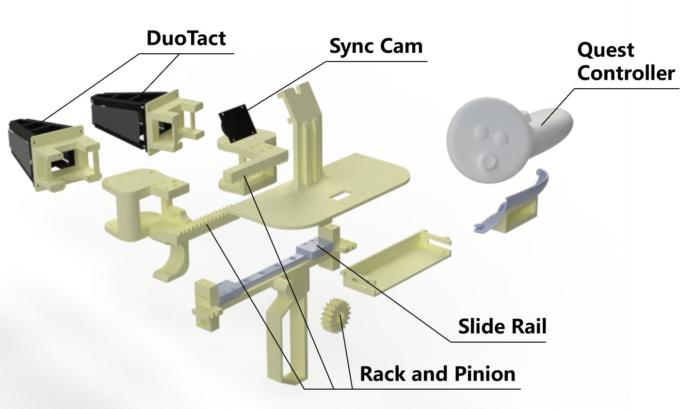
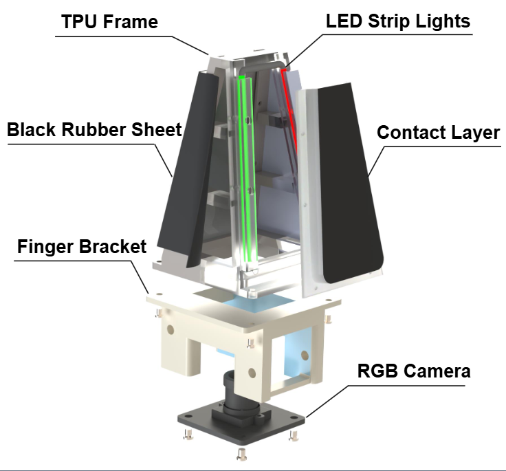
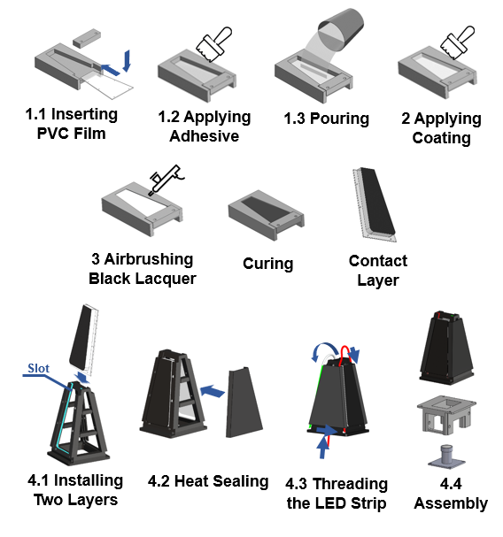

Participant Guide
ManiSkill-ViTac Challenge 2026
Guide covering data processing, visualization, policy training and real-robot deployment.
Hardware
Gripper Design
ViTaMIn-B2 is a system for bimanual visuo-tactile data collection, updated from ViTaMIn-B. The system integrates synchronized cameras for bimanual visual observation, Meta Quest 3 controllers for 6-DoF bimanual pose acquisition, and two DuoTact sensors for tactile sensing on each hand. Gripper width with a maximum span of 8 cm is computed by detecting ArUco markers on the gripper. Since both hands are occupied during data collection, a foot pedal is used to trigger the start and end of recording.
Compared with ViTaMIn-B, several improvements were introduced:
- The novel visuo-tactile sensors (DuoTact) are optimized to enhance structural stability. Markers on contact layers are introduced for better shear-force estimation.
- GoPro Hero 10 is replaced by synchronized cameras for lighter weight and better timestamp synchronization.
- The mechanical structure is optimized for improved ergonomics and reduced weight.

Sensor Design

- TPU Frame: Flexible metamaterial structure for shape adaptation.
- Contact Layer: A multi-layer structure consisting of: a 1.6-mm-thick transparent PVC film to support the contact layer; a transparent silicone gel base deforming to reveal local contact conditions; a reflective layer; and a black coating overlay.
- Black Rubber Sheet: Heat-sealed on both sides of the TPU frame to prevent ambient light interference.
- LED Strip Lights: Programmable LED strip lights integrated to capture contact geometry details.
- RGB Camera: 640×480 resolution at 30 fps for internal monitoring.
Fabrication Process
The fabrication process of DuoTact is illustrated in Fig. 3:
- To ensure fabrication stability across sensor units, the key components are manufactured using high-precision methods. The TPU frame is produced using selective laser sintering (SLS) 3D printing, the PVC film is fabricated via laser cutting, and the mold used for casting the contact layer is manufactured using computer numerical control (CNC) machining.
- A PVC film is inserted into the mold cavity and coated with a transparent silicone adhesive. Subsequently, 10 g of transparent silicone gel (Wacker Elastosil® RT 601, A:B = 9:1 by weight) is poured into the mold and cured at 60 °C for 30 minutes.
- A reflective coating, consisting of Posilicone Translucent silicone (A:B = 1:1 by weight) and white pigment (2:0.1 weight ratio), is applied onto the cured transparent silicone surface. This layer is then cured at 60 °C for 20 minutes.
- A black coating, consisting of Novocs Matte matting agent, Ecoflex 00-10 (A:B = 1:1 by weight), and black pigment (26:6:1 weight ratio), is uniformly airbrushed over the reflective layer and dried at 60 °C for 20 minutes.
- For final assembly, the two fabricated contact layers are slid into slots on the TPU frame. A black rubber sheet is then attached to the frame's exterior via heat sealing. Subsequently, the LED strip light is threaded through designated slots on the frame. Finally, the RGB camera and the TPU frame assembly are mounted onto the finger bracket using screws and nuts.

Dataset Format
Sample data sets are available here: Download sample data sets.
Each dataset (sample_clean, sample_smash) is split into multiple 2.1 GB parts
(.part_aa, .part_ab, ...). After downloading all parts of a dataset into the
same folder, merge and extract them with:
# Linux / macOS
cat sample_clean.part_* > sample_clean.tar && tar -xvf sample_clean.tar
cat sample_smash.part_* > sample_smash.tar && tar -xvf sample_smash.tar
# Windows (PowerShell)
cmd /c "copy /b sample_clean.part_* sample_clean.tar"
tar -xvf sample_clean.tar
cmd /c "copy /b sample_smash.part_* sample_smash.tar"
tar -xvf sample_smash.tar
Make sure every part is fully downloaded before merging — a missing or truncated part will make the final
archive fail to extract. If the archive is gzipped (.tar.gz), replace tar -xvf
with tar -xzvf.
Our LeRobot dataset includes four types of information: visual images, tactile images, proprioceptive state, action trajectories, and language prompts. The dict keys and formats for each modality are listed below.
| Key | Description | Shape | Notes |
|---|---|---|---|
observation.images.camera0 |
Left wrist camera | (224, 224, 3) | Fisheye camera |
observation.images.camera1 |
Right wrist camera | (224, 224, 3) | Fisheye camera |
observation.images.tactile_left_0 |
Left hand — left tactile sensor | (224, 224, 3) | Pinhole camera |
observation.images.tactile_right_0 |
Left hand — right tactile sensor | (224, 224, 3) | Pinhole camera |
observation.images.tactile_left_1 |
Right hand — left tactile sensor | (224, 224, 3) | Pinhole camera |
observation.images.tactile_right_1 |
Right hand — right tactile sensor | (224, 224, 3) | Pinhole camera |
observation.state |
Proprioceptive state | (20,) | Dim.0–5: left hand 6-DoF pose (x, y, z, rx, ry, rz); 6: left gripper width; 7–12: right hand 6-DoF pose; 13: right gripper width; 14–19: right hand pose relative to left hand |
actions |
End-effector action trajectory | (20,) | Dim.0–8: left hand 9-DoF delta pose ((x, y, z) + first two columns of rotation matrix, i.e. r00, r10, r20, r01, r11, r21); 9: left gripper width; 10–18: right hand 9-DoF delta pose; 19: right gripper width |